在所有裝備中，帳篷是最重要也最昂貴的一項。它是我們在野 外遮風避雨的地方，能不能安穩睡上一晚，全都靠它。 帳篷 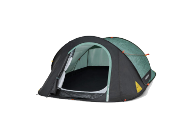 可從「可容納人數」著手，並建議多加上 2 位作為參考，如此一來，帳內空間較為舒適，也有地方放置行李。 天幕 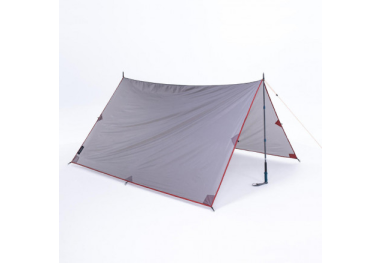 夏天露營時，可準備天幕，既可遮陽又能延伸帳篷空間。 客廳帳 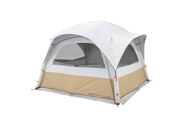 如果選在冬天露營，可以準備客廳帳，達到保暖、防風雨的效果。
帳篷 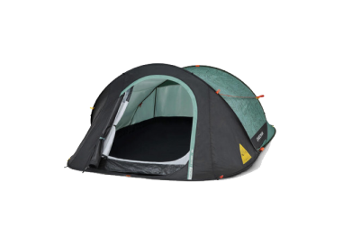 可從「可容納人數」著手，並建議多加上 2 位作為參考，如此一來，帳內空間較為舒適，也有地方放置行李。 天幕 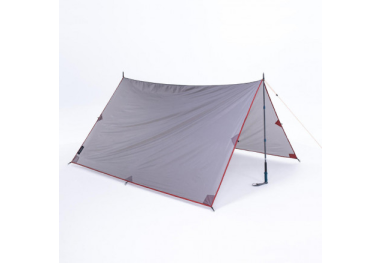 夏天露營時，可準備天幕，既可遮陽又能延伸帳篷空間。 客廳帳 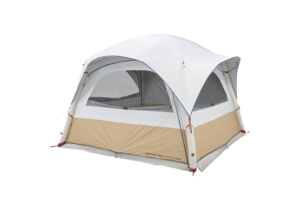 如果選在冬天露營，可以準備客廳帳，達到保暖、防風雨的效果。
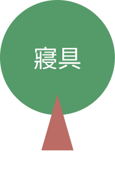 山上與平地不同，白天就算再溫暖，經常是太陽一下山，氣溫 便明顯降溫，因此睡袋絕對是不可或缺的必需品。 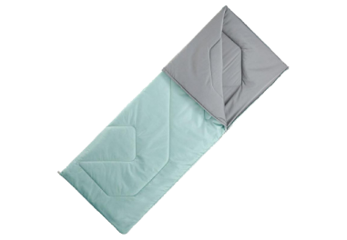 建議挑選比戶外溫度再低 3 至 5 度的睡袋。假設營地入夜後，戶外溫度只剩 5 度，則應挑選最適溫度 0 度的睡袋。 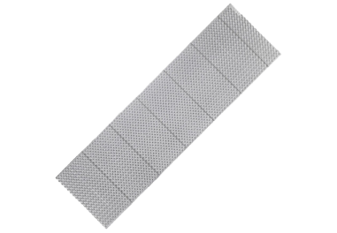 市面上常見的睡墊有泡棉及充氣兩種，前者優點是輕，後者則是收納方便，睡眠舒適程度普遍也優於泡棉。 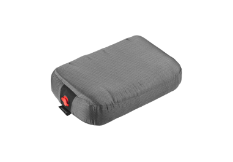 有充氣型、棉布型、記憶乳膠型枕頭等類型，可視個人情況選擇。
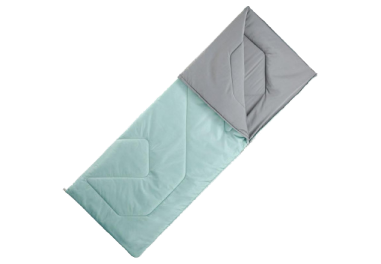 建議挑選比戶外溫度再低 3 至 5 度的睡袋。假設營地入夜後，戶外溫度只剩 5 度，則應挑選最適溫度 0 度的睡袋。 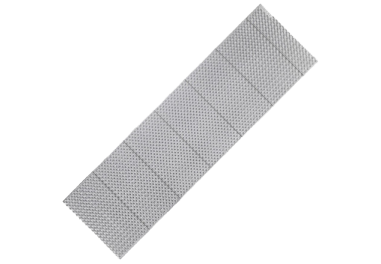 市面上常見的睡墊有泡棉及充氣兩種，前者優點是輕，後者則是收納方便，睡眠舒適程度普遍也優於泡棉。 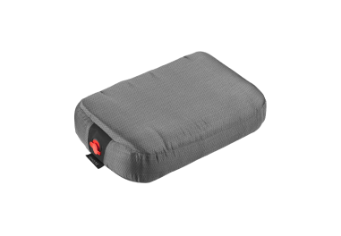 有充氣型、棉布型、記憶乳膠型枕頭等類型，可視個人情況選擇。